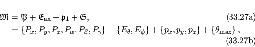

Next: Free rotor isotropic cone Up: Free rotor isotropic cone Previous: Free rotor isotropic cone Contents Index
For the free rotor variation of the isotropic cone model, the torsion angle restriction is absent and the model parameters are
|  |
where Pi are the average domain position translations and rotations, Ei are the spherical angles defining the cone axis, pi are the coordinates of the pivot point, and θmax is the maximum cone opening half-angle.